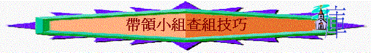

一.清楚自己的角色
不是講道者:單是你講，新朋友只默默去聽
不是尊制者:不容許組員分享你問題以外的答案
不是任憑者:任感組員漫無目的分享
是引導者
:你像一個設計野外動向工作員，預先設計內容，提供指引，引導參與者一步一步尋得目標，至終完成活動，查經組長角色是：預先預備查經資料及問題→引導組員留意經文→思考意思→提出疑問
→發現真理→生活應用
是激發者
:用諸般方法令組員肯分享，肯表達意見
是控制者
:控制小組分享時間，氣氛，組員所表達內容會否離經背道….
是諮詢者
:有責任比其他組員更有充足的預備，若有組員對經文有疑惑問題，而其他組員也不能回應的，應有責任提出意見與答案。
是建立關係者:令組員彼此之間建立關係，幫他們投入教會生活
二.認識組員的名字
∼將組員名字及坐的位置寫入紙中，或善用剔到表記下組員名字方便題名發問
三.安排合適的場景
∼有效運用場地及坐位安排，令組員在安全及舒服環境下查考聖經
∼例如：組長的位置是否一眼可以看到所有組員
∼組員的坐位盡量不對著時鍾或走廊門窗，避免受騷擾
四.引發組員的參與
1.開聲問題
e.g.先問一些簡單問題(一開始不讓組員有太大挫折)輪流開聲講一個答案(可順時針作答，讓他先有心理準備要參與)
2.交錯發問
e.g.順時針作答→下一次逆時針→再下一次抽人作答(讓組員知道隨時可能要抽中作答，會令他特別儆醒)
3.真誠讚賞
4.身體語言
∼點頭
∼鼓勵眼神
5.澄清問題
∼有時組員不答，因為不大明白問題，可加些例子，說話解釋。
五.增加組內的互動
∼令組員不是單向組長報，而是組員之間互相有溝通，多向的!
1.刻意不望某作答的組員
∼令他望向其他人
2.適當手勢叫他向其他組員分享
3.邀請其他組員回應剛分享組員的答案
六.總結組員的分享
e.g.XX講到A點，
XX講到B點， XX講到C點，從分享中，我們知道A，B，C.3點的真理
七.回應特殊的組員
1.不善於表達者
∼給一些簡單而有成功感的問題給他分享
∼在設計問題下功夫，問一些較據體而易分享的問題
∼留意他是思想型or感性的人，就他的類型問相關(理性/感性的問題)
∼不刻意針對他，多些輪流作答
∼多讚賞
2.不喜歡說話者
∼可邀請他讀經
∼讓他與組員先熟落
∼不要太強逼他說話，他可能喜歡聽人分享多於說話，讓他在無太大壓力下參與小組
3.太主動發言者:
∼小用輪流式作答，用邀請式發問，有時刻意不問他
∼適當的說話將他帶回正題，及盡快歸納他的意見，讓其他組員可以有機會分享
4.好勝常爭辯者:
∼記下他的問題(代表尊重)，有時間/機會再作答
e.g.可以說:「你題出的問題很有深度，但時間關係，我們寫下，有時間下我們再作答」
5.分享非真理者:
∼分享一些不合真理的事，可問其他組員怎看，用小組壓力帶回他到真理中
6.其他…
堂課實習帶查經
1.查經資料
腓1:12-30
興旺福音
引言
1:12提到興旺福音，興旺是什麼意思？ 今天信徒可以做什麼事情令福音興旺？我們看看保羅又如何興旺福音？ 他在興旺福音上，對信徒有什麼心意及期望？
A.受苦的見證(1:12-14)
a.1:12提及我所遭遇的事，保羅遭遇了什麼事? 若今天導師因信仰原故被捆鎖，你的心情如何？有什麼記掛？
b.保羅又願意教會知道甚麼事？
1:13提及御營全軍，指什麼人？ 1:13-14提及他被綁帶來甚麼果效？對未信的人及對相信的人有甚麼影響？
為什麼會帶來這些影響？
c.有沒有聽過／看過一些屬靈偉人／肢體在苦難中發揮很大的影響力？試分享
d.若你今天在人生路中受苦難(如患重病)，你期望你的生命帶給其他人有什麼正面影響？
2.角色人物
A.組長
B.3位少年組員(2位舊組員,1位新組員)
3.留意
A.組長帶組技巧:欣賞及改善的地方
B.帶小組遇到的困難